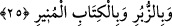
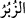
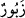
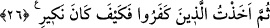

her ümmet, peygamber gönderilerek mazeretleri ortadan kaldırılıp kendilerine delil
ispat edilmeden helâk edilmemişlerdir. Bu ikinci yorum, iki âyetin arasını
bağdaştırmada daha münâsiptir. Allah Teâlâ’nın bundan sonraki “Eğer seni
yalanlıyorlarsa (üzülme), onlardan öncekiler de yalanlamışlardı” kavli de buna
delâlet etmektedir. Yoksa fetret döneminde onlara bir uyarıcı gelmemiştir. “Ataları
uyarılmamış, bu yüzden kendileri de gaflet içinde kalmış bir toplumu uyarman için
indirilmiştir.” (Yâsîn 36/6) kavli de bunu ifâde etmektedir.
Yine kavl-i ilâhî şuna da delâlet etmektedir ki eski ümmetlerde kendilerine uyarı
yapıldığı halde bunu kabul etmeyenlerin azapla kökü kesilmiştir. Yâni uyarıcıyı
yalanlayan her ümmet, bir tür azapla cezâlandırılmıştır. İki âyet arasını bağdaştırma
gerekçelerinin tamamı Yâsîn suresinde ilgili ayette (Yasin 36/6) gelecektir.
25. Eğer seni yalanlıyorlarsa (üzülme), onlardan öncekiler de yalanlamışlardı.
(Oysa ki) peygamberleri onlara açık âyetler (mucizeler), sahifeler ve aydınlatıcı
kitap getirmişlerdi.
“Eğer” Kureyş’in inkârcıları “seni yalanlıyorlarsa” yâni seni yalancılıkla ithâm
ediyorlarsa, onları ve onların yalanlamalarını dikkate alma, “(üzülme), onlardan
önceki” âsî ümmetler de peygamberlerini “yalanlamışlardı.”
el-Müfredat’da kaydedildiğine göre “__WORD__ ismi “__WORD__ kelimesinin çoğuludur. Kalın ve
büyük harflerle yazılmış olan demektir. Böyle kalın ve büyük harflerle yazılı her şeye
“Zebûr” denilir.
“(Oysa ki) peygamberleri onlara” peygamberliklerinin ve dâvâlarının doğruluğuna
delâlet eden “açık âyetler (mucizeler),” Şit (a.s.), İdris (a.s.) ve İbrahim (a.s.)’a
verilen “sahifeler ve” muhtaç oldukları hükümleri, delilleri, mev’izeleri, misalleri,
vaad ve tehdidi ve benzerlerini beyan eden Tevrat, İncil ve Zebur gibi hakkı ortaya
koyan “aydınlatıcı kitap getirmişlerdi.”
Bu mezkûr kitapların bazısı tekzipçilerden bazılarına diğer bazısı da diğerlerine
gelmiştir. Yoksa bunların tamamı geçmiş ümmetlerin hepsine gelmemiştir.
26. Sonra ben, o inkâr edenleri yakaladım. (Bak ki) cezam nasıl oldu!